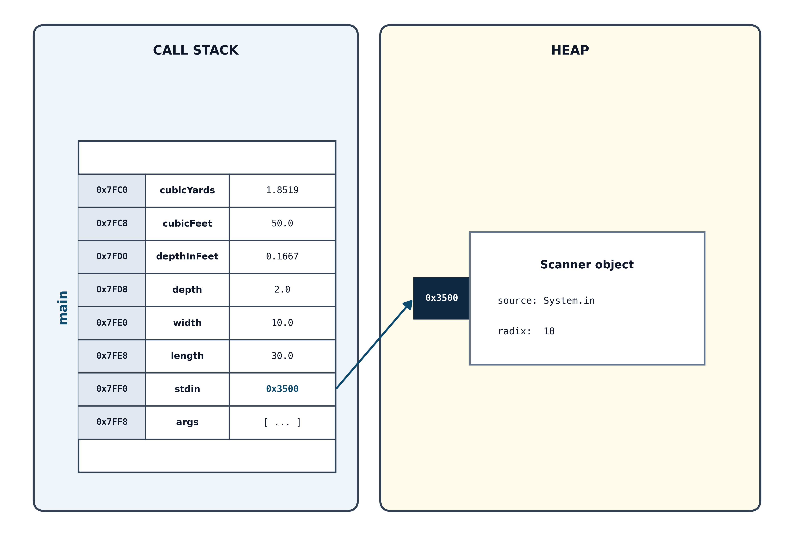

Section 2.4 Data: Variables, Literals, and Types
In chapter 1 we learned that programs store data in computer memory, and everything stored in memory is stored as binary numbers. (Technically, data is stored using some physical method that we interpret as binary numbers.) Fortunately, modern programming languages provide data types that allow us to think of data in a way that is closer to the problems we’re solving: as text, as individual characters, and as integers and real numbers in decimal (base ten). It is important to remember, though, that the underlying representation is a finite number of binary bits that are interpreted by Java as text, a number, or something else. When the underlying representation can impact your high-level programming, we will discuss how and why.
Every piece of data in a Java program has a type. The type specifies how many bits are set aside for that piece of data and how they are organized and interpreted. Java provides eight primitive data types (four integer types, two real types, a character type, and a Boolean type) and many class data types (such as
String and Scanner). The classes that we are writing in this chapter and the next two, like MulchCalculator, are programs. But most classes are data types, and we will learn to create our own data types in chapter 5.
Let’s focus in on that idea of a “piece of data.” Each individual variable and literal in a program is a piece of data. In our
MulchCalculator program, we have eight variables, declared in the method header on line 9 and on lines 10 to 16 (args, stdin, length, width, depth, depthInFeet, cubicFeet, and cubicYards), and we have seven literals in the program. The literals are, in the order you see them in the program, "Enter the length of the area in feet: ", "Enter the width of the area in feet: ", "Enter the desired depth in inches: ", 12.0, 27.0, "You need ", and " cubic yards of mulch.". Each variable and literal is a piece of data that has a data type and is stored in the computer’s memory at some point while the program is running.
To understand the difference between a variable and a literal, it will be very helpful to understand statements, expressions, and evaluation. We will revisit these ideas throughout the book. For now, briefly, a program is composed of programming statements. Each statement is a complete instruction that commands the program to do something. In our program, all statements end with a semicolon, and they are listed one to a line. (Later we will learn about block statements, which are enclosed in curly braces.)
Many statements contain expressions. Expressions are pieces of code that represent or calculate a single value. When Java encounters an expression in code, it evaluates it, meaning it performs the necessary arithmetic or lookups to reduce that expression down to its final value.
Now we have the tools to clearly distinguish between a literal and a variable. A literal and a variable can both be expressions that evaluate to a value. A literal evaluates to (literally) what you type. So, for example, the literal
12.0 evaluates to 12.0, and the literal "You need " evaluates to “You need”. So on line 32, when we divide depth by 12.0, we are dividing the value in the variable depth by, literally, 12.0. And on line 37, when we’re concatenating the value cubicYards to the literal "You need ", we will end up with a String that begins with, literally, “You need”, and ends with the value in cubicYards, converted to a String.
What does a variable evaluate to? A variable evaluates to the last value assigned to it during the program’s execution. We will talk more about assignments in a moment, but for now, assignments are the statements with a variable on the left, an equals sign, and an expression on the right, and they give the expression’s value to the variable on the left. For a moment, imagine we had this code in the program:
System.out.print("Enter the desired depth in inches: ");
depth = stdin.nextDouble();
depth = depth / 12.0;
It’s very similar to Listing 2.1, but instead of storing the depth converted to feet in the variable
depthInFeet, we’re storing it back in the variable depth. Then, if the user enters 4 at the prompt, the value in depth after line 2 executes is 4, and the value in depth after line 3 executes is .3 repeating. If we ask Java to evaluate depth after line 2, it would evaluate to 4, but if we ask Java to evaluate depth after line 3, it would evaluate to .3 repeating. And it never evaluates to depth—the thing we literally type in the program—it always evaluates to the value assigned to depth.
Every expression in Java has a type. We declare the types of variables with variable declarations, like on lines 9 and 10-16 in Listing 2.1. Java assigns types to literals based on defaults, and it infers expression types from the types of the operands in the expressions. It is our responsibility to write our code so that our operations are appropriate for the types of data involved.
Subsection 2.4.1 Java’s Primitive Types
So what are the available data types?
Every variable in Java must have a data type that tells the compiler how much memory to reserve and what kind of data can be stored there. Java provides eight primitive types—fundamental building blocks built directly into the language. They fall into four general categories:
-
Integer types (whole numbers).
byte(8 bits),short(16 bits),int(32 bits), andlong(64 bits). -
Floating-point types (numbers with decimal fractions).
float(32 bits) anddouble(64 bits). -
Character type (single letters or symbols).
char(16 bits). -
Logical type (truth values).
boolean(representing eithertrueorfalse).
Why does Java offer four different types just for whole numbers? The answer comes down to memory and range. A computer stores everything in binary bits (0s and 1s). The more bits a type uses, the more distinct values it can represent, and the wider its numerical range:
An 8-bit
byte has \(2^8 = 256\) possible bit combinations. Because Java integers are signed (they can be positive or negative), a byte splits those combinations evenly around zero, spanning from \(-128\) to \(+127\text{.}\)
A 16-bit
short doubles the bits, providing \(2^{16} = 65{,}536\) combinations (\(-32{,}768\) to \(+32{,}767\)).
Doubling the bits again, a 32-bit
int provides over 4 billion combinations, and (doubling again) a 64-bit long provides over 18 quintillion combinations.
In modern programming,
int is the standard default choice for whole numbers, and double is the standard default for decimal numbers. The smaller types (byte and short) are primarily used in specialized situations, such as processing large streams of raw binary data or working with massive datasets where saving every byte of memory counts.
Subsubsection 2.4.1.1 Integer Primitives
Table 2.3 lays out the four primitive integer types, their bit-widths, and their exact numerical ranges.
| Data Type | Size (Bytes) | Range of Values | Typical Use / Best Practice |
|---|---|---|---|
byte |
1 byte | \(-128\) to \(127\) (\(-2^7\) to \(2^7 - 1\)) | Rare; used for raw binary files or large data streams. |
short |
2 bytes | \(-32{,}768\) to \(32{,}767\) (\(-2^{15}\) to \(2^{15} - 1\)) | Extremely rare; historical/legacy use. |
int |
4 bytes |
\(-2{,}147{,}483{,}648\) to \(2{,}147{,}483{,}647\)
(\(-2^{31}\) to \(2^{31} - 1\))
|
The default choice for all counting, indexing, and normal whole numbers. |
long |
8 bytes |
\(-9{,}223{,}372{,}036{,}854{,}775{,}808\) to \(9{,}223{,}372{,}036{,}854{,}775{,}807\)
(\(-2^{63}\) to \(2^{63} - 1\))
|
Values exceeding 2 billion (timestamps, large financial sums); append L. |
If you have an integer literal in a program, its data type will be
int by default. This can make assignment statements a little confusing when you’re assigning a literal to a variable that isn’t of the int type. When a value is moved from a smaller representation to a larger one (e.g. int to long), the operation is called widening. When a value is moved from a larger representation to a smaller one (e.g. int to byte), the operation is called narrowing. Because narrowing can cause data loss, Java will never automatically narrow a variable. However, for integer literals, Java provides a helpful exception: it allows automatic narrowing only if the literal fits within the target type’s range.
If you are assigning an integer literal to a
byte or short variable, Java will check that the literal can be stored in the smaller number of bits, and if it can, it will assign it to the variable. If it can’t, Java will flag a “type mismatch” syntax error and tell you that it cannot convert from an int to a byte or short.
byte b1 = 127; // This is fine because 127 can be represented in eight bits.
byte b2 = 128; // This flags a "type mismatch" syntax error.
If you need an integer literal in your program that is the size of a
long, append an uppercase or lowercase L to the end of the literal. (We recommend an uppercase L, because a lowercase l can look like the digit one.)
long bigNumber = 2147483648L;
While we ordinarily write numbers in base 10 (decimal), Java allows you to write integer literals in other number bases using special prefixes. To write a number in hexadecimal (base 16), prefix the literal with
0x or 0X (e.g., 0x1A evaluates to 26). To write in binary (base 2), prefix it with 0b or 0B (e.g., 0b1010 evaluates to 10).
However, you must be extremely cautious with octal (base 8), because in Java, any number beginning with a leading zero is interpreted as octal. In everyday life, we often pad numbers with leading zeros for visual alignment (such as writing 012 to represent the number twelve). In Java, writing
int code = 012; does not store the value 12; because of that innocent-looking leading zero, Java evaluates it in base 8, resulting in the decimal value 10 (\(1 \times 8^1 + 2 \times 8^0\)). Even more confusingly, writing something like int month = 08; or int day = 09; will trigger an immediate compiler error, because the digits 8 and 9 do not exist in octal! Unless you deliberately intend to write a base-8 number, never put a leading zero in front of an integer literal.
Another natural habit we have when writing numbers for visual clarity is using a separator, such as a comma in numbers or a space. You cannot use commas or spaces inside a Java number—a comma separates arguments, and spaces separate words. However, Java offers an elegant alternative: you can use an underscore (
_) anywhere between digits as a visual separator. (You don’t have to use it to separate thousands exclusively, but you can only put an underscore between two digits.) The following code is perfectly legal in Java:
int twoBillion = 2_000_000_000;
Subsubsection 2.4.1.2 Floating-Point Primitives
The
float and double data types represent numbers with decimal points using an international hardware standard known as IEEE 754. Because computers store these numbers in binary (base 2) rather than decimal (base 10), their precision does not translate into an exact number of decimal places.
A
float occupies 4 bytes (32 bits) of memory. It can store positive or negative values up to roughly \(3.4 \times 10^{38}\text{,}\) but it only provides roughly 7 decimal digits of precision. If you try to store a number with more than 7 digits, the trailing digits will be lost to rounding errors. A double occupies 8 bytes (64 bits) of memory. It provides “double precision,” allowing values up to roughly \(1.8 \times 10^{308}\) with 15 to 17 decimal digits of precision.
In modern software development, memory is plentiful, so you should almost always use
double whenever you need numbers with fractional parts.
If you have a floating-point literal in a program, its data type will be
double by default, and Java will not narrow a double literal to a float. To make a literal of type float, you must append an F or f to the end of the number. For example, 1.2F stands for 1.2 considered as a value of type float.
float smallReal = 1.2F; // This is fine; 1.2 is represented as a float.
float babyReal = 1.2; // This flags a "type mismatch" syntax error.
Real numbers can also be represented in an exponential (E) form such as
1.3E12 or 12.3737E-108. The E12 and E-108 represent powers of 10, so that 1.3E12 means \(1.3 \times 10^{12}\) and 12.3737E-108 means \(12.3737 \times 10^{-108}\text{.}\) This format can be useful for expressing very large and very small numbers. They are, again, doubles. If you want to use E notation to write a literal float, append F to the end of the number (e.g. 1.3E12F).
Java will sometimes use E notation, which can be jarring if you haven’t seen it before! If a
double calculation produces a number greater than or equal to 10 million (such as 1.5E7) or a tiny fraction smaller than 0.001 (such as 5.0E-4), Java will automatically display the result in this exponential notation. Don’t worry—the calculation is correct! Later in this chapter, you will learn how to use System.out.printf to force Java to display numbers in standard decimal form.
Table 2.4 summarizes the two floating-point primitive types, their bit-widths, and their exact numerical ranges.
| Data Type | Size (Bytes) | Range & Precision | Typical Use / Best Practice |
|---|---|---|---|
float |
4 bytes |
Range: \(\pm 1.4 \times 10^{-45}\) to \(\pm 3.4 \times 10^{38}\)
Precision: \(\approx 7\) decimal digits
|
Rare in general programming. Used when saving memory in massive numeric datasets (e.g., 3D graphics coordinates, game physics, or machine learning). Requires appending F or f to literals (e.g., 1.2F). |
double |
8 bytes |
Range: \(\pm 4.9 \times 10^{-324}\) to \(\pm 1.8 \times 10^{308}\)
Precision: \(15\) to \(17\) decimal digits
|
The default choice for all calculations involving decimal points and fractions. Provides “double precision” to avoid rounding errors. All standard decimal literals (e.g., 3.14, 0.5) are double by default. |
Subsubsection 2.4.1.3 The char and boolean Primitives
A variable of type
char occupies two bytes in memory, and stores a single character from virtually any language, such as 'A', '*', 'م', and 'π', as well as non-printing characters such as backspace, tab, and carriage return. At the time Java was created, two bytes was enough memory to store all characters in the Unicode set. Unicode was later expanded to include characters stored in three or four bytes. In the rare case that you need to store one of these characters, you can store it in two Java char variables. Character literals are delineated by single quotes, as in the examples above.
You can also write a character literal as its Unicode code point. A Unicode literal consists of
\u followed by four hexadecimal digits. (The tables on the Unicode consortium’s website show the values in hexadecimal, so you won’t have to convert from decimal!) The four character literals shown above (uppercase A, asterisk, mim, and pi) would be written '\u0041', '\u002A', '\u0645', and '\u03C0' as Unicode literals, respectively.
Values of type
char are closely related to integer values, since a character is stored as a 16-bit integer. In fact, we will learn algorithms in which we manipulate character data as integers.
The two
boolean literals are true and false, typed exactly as shown here (all lowercase, and not enclosed in quotes). We’ll learn more about boolean literals, variables, and expressions in the next chapter.
It is completely understandable if the discussion of numeric ranges and storage in this section made your head spin a little! Don’t worry—if you need the exact number of bytes or limits for a specific data type, you can always refer to the tables in this chapter. The most important takeaway is this: in pure mathematics, numbers can stretch to infinity and real numbers have continuous, infinite precision. In a computer, however, all numbers are finite, limited in precision, and stored in binary.
In the upcoming section on arithmetic, we will look at the surprising errors that can happen when calculations bump up against the boundaries of a fixed, finite representation—and how to handle them. (Errors are always more fun to study when they’re happening to somebody else!)
Subsection 2.4.2 Variables and Assignment Statements
A variable is a named location in the computer’s memory used to store a value while your program runs. Think of a variable as a labeled storage container: its name (the label) allows you to refer to the data, its type dictates what kind of data fits inside, and its value is whatever item is currently placed in the container. As the word variable implies, the value stored inside can change (vary) as your program executes, allowing your code to keep track of scores, perform ongoing calculations, and respond dynamically to user input. When you write a program, you might need a variable to store each input, temporary calculation, and result.
Listing 2.1 has eight variables—
args, which you need not worry about for now, stdin, which is of type Scanner, and length, width, depth, depthInFeet, cubicFeet, and cubicYards, all of type double.
Subsubsection 2.4.2.1 Declaring Variables and Giving Them Values
Let’s begin with variable declarations and naming. In our programs in this book, we will declare variables at the top of the method they belong to, under the method header. Technically, you only need to declare a variable before you give it a value, but if you declare all of a method’s variables at the top of the method (with a few exceptions we’ll discuss as they arise), then anybody reading your code will always know where to go to see the type of a variable and, if you’ve commented it, a description.
To declare a variable, give the type of the variable followed by a space, and then the variable name, followed by a semicolon. You can also declare more than one variable of the same type in one declaration, by separating the names with commas. Here are some examples:
int numberOfPages, count;
char firstLetter;
double area, elapsedTime;
boolean validInput;
A good practice is to declare one variable to a line followed by a single-line comment, as in Listing 2.1. The comment should provide additional information about the variable that will help a person understand the variable’s role in the program. (Such as the unit of the data and whether the variable is calculated or obtained from the user.) If variables are closely related or are so obvious they don’t require a comment, you can declare them together on one line without sacrificing readability.
There are certain rules which govern what can be a variable name. First, you can’t use a Java reserved word as a variable name. Reserved words are words with special meaning to Java. Reserved words you’ve seen include
public, class, static, void, int, and double, among others. Second, your variable name can consist of letters, numbers, the dollar sign, and the underscore only (no other characters), and may not begin with a number. This means that you cannot have a space in a variable name.
Java is case sensitive, meaning that it recognizes the difference between uppercase and lowercase letters. Therefore,
numberOfPages and numberofpages are two different names. Mistyping a name is a common and frustrating error, but most programming editors (including Eclipse) have an autocomplete feature to help prevent it. If you type control-space while you’re typing a name in Eclipse, it will offer you a menu of options that include the text you’ve typed.
You may have noticed that when a variable name consists of more than one word, the words are run together with the first letter of each word capitalized. This is called camelCase, and it is the convention for naming variables in Java. (In other words, Java doesn’t care if you use camelCase, but Java programmers are accustomed to variables being named with camelCase.)
Most importantly, variable names are meaningful. This means that a variable name clearly communicates what is stored in it, usually drawing from the language of the problem description or domain. For example, if you are told to obtain the number of pages from the user, it makes sense to call the variable
numberOfPages and not numSheets, because numberOfPages relates back to the problem description. A person reading your code who is familiar with the problem will immediately know what numberOfPages is, whereas numSheets will be unfamiliar.
To assign a value to a variable—to put a value in its container—use an assignment statement. To write an assignment statement, write the variable name, the assignment operator, which is the equals sign, and then an expression that evaluates to the same type as the variable. Here are examples of assignment statements with some of the variables we declared above:
count = count + 1;
numberOfPages = stdin.nextInt();
firstLetter = 'A';
area = length * width;
It is also allowed to declare a variable and assign a value to it on the same line, as in:
double average = 0.0;
Beginning programmers sometimes think that an assignment statement is an equality statement, because the assignment operator is the equals sign. But an assignment statement is a programming statement that executes—it does something. When an assignment statement executes, it executes right to left. The expression on the right is evaluated and the value is then stored in the variable on the left. This means that we can have the same variable on the left and right side of an assignment statement, as in
count = count + 1. When Java reaches this statement, it looks up the value of count, adds 1 to it, and then stores the result back in count.
In the second assignment statement, we are invoking the
Scanner method nextInt, which we will discuss in detail in a later section. This method obtains input from the console. Whatever value the user types, it is converted to an integer (if possible) and then stored in the variable numberOfPages. In the third assignment, we are assigning a literal character 'A' to firstLetter. And in the last, we have a slightly more complex expression involving multiplication. The variables length and width will be evaluated (this is the case where the variable name refers to the value in the container, not the container itself), their values multiplied together, and the result will be stored in the variable area.
You cannot use a variable in an expression until it’s been given a value with an assignment statement. Notice in Listing 2.1,
depth is given a value on line 28 before it’s used on line 32 to give depthInFeet a value. On line 33, we are calculating cubicFeet from length, width, and depthInFeet. These variables got values before line 33, on lines 22, 25, and 32, respectively. If you try to use a variable before it has a value, Java will flag the code with “The local variable … may not have been initialized.”
Subsubsection 2.4.2.2 Where Variables Live in Memory
It is important to understand something about how variables are stored in memory, because there are differences in how Java treats data stored on the stack and data that is stored in the heap. This discussion will be a simplification of Java memory management, but it will give you the background you need for programming effectively in Java.
When a method (such as
main) executes, Java places a frame on the stack. The frame includes space for some housekeeping information for the method as well as space for all of the variables declared in the method. As the method executes and each variable is assigned a value, if the variable is a primitive variable, the value is placed in its space in stack memory.
If a variable is not a primitive variable, such as
stdin (and args), then it is a reference to an object. Space for the variable is still allocated on the stack in the method’s frame, but the data will not be stored there. Space for the data will be allocated in the heap. That space is allocated using the new keyword, as in line 19 in Listing 2.1:
stdin = new Scanner(System.in);
Line 19 allocates space in the heap for a
Scanner object and stores the memory address of that space in the variable stdin on the stack. So in Listing 2.1, the double variables length, width, depth, etc. will all be eight-byte locations on the stack holding a double value stored using the IEEE 754 format. The variables args and stdin will typically be four bytes, used to store the heap memory address where the data is stored.

Diagram illustrating stack and heap memory during the execution of
MulchCalculator. The call stack contains a stack frame for the main method holding local primitive variables (length, width, depth, depthInFeet, cubicFeet, cubicYards) with their 64-bit IEEE 754 floating-point values stored directly inside the stack frame, while reference variables (args and stdin) hold memory addresses that point to dynamically allocated object data on the heap (such as the Scanner object created with the new keyword).
Once a method is finished executing, its frame is removed from the call stack and the variables declared in the method, called local variables, no longer exist. We think of the existence of variables in two different ways: their lifetime, which refers to when the memory space physically exists on the call stack, and their scope, which refers to where that variable can be seen and used in the program.
The lifetime of a local variable begins when the method is called and ends when the method finishes and its frame is removed. The scope of a variable begins at its declaration and ends at the closing curly brace of the block it was declared in. In our program, all of our local variables come into scope at their declaration within
main, and go out of scope at the closing curly brace at the end of main.
For now, remember the stack / heap distinction that local primitives are stored on the stack and objects are references on the stack to data stored in the heap, and that heap memory is allocated with the
new keyword. We will revisit this when we encounter programming situations in which you treat stack and heap variables differently.
Subsubsection 2.4.2.3 Constants (Using the final Keyword)
As the name implies, variables are designed to vary—their values can change throughout the execution of a program. Often, however, your program needs to work with values that should never change while the program runs. Examples of values that shouldn’t change while a program is running include mathematical constants such as pi, conversion factors such as the number of seconds in a minute, and organizational rules, such as the maximum number of attempted logins.
In Java, a variable whose value cannot be changed once initialized is called a constant. To turn a regular variable into a constant, add the
final keyword before the data type:
final double SALES_TAX_RATE = 0.0625;
final int INCHES_PER_FOOT = 12;
The
final keyword acts as a permanent lock on that memory location. If you accidentally attempt to assign a new value to a final variable later in the program, the Java compiler will flag the line with an error.
final int MAX_ATTEMPTS = 3;
MAX_ATTEMPTS = 4;
// ERROR: The final local variable MAX_ATTEMPTS cannot be assigned.
Earlier, we saw that variables use camelCase and classes use PascalCase. For constants, Java follows a completely different convention: all uppercase letters with words separated by underscores, often called UPPER_SNAKE_CASE. This formatting immediately alerts anyone reading your code that this identifier represents a permanent, read-only value. You will see this convention in Java’s standard library with constants like
Math.PI and Integer.MAX_VALUE.
Beginners often wonder why they should use constants, rather than simply typing the literal values into the code. Using constants provides three major software engineering benefits:
-
Eliminating “Magic Numbers”.
A magic number is a raw numeric literal that appears in code without an explanation of what it means. Compare these two lines:
double total = subtotal + (subtotal * 0.0625); // Magic number double total = subtotal + (subtotal * SALES_TAX_RATE); // Named constantIn Version A, anyone reading the code (including you six months later) has to guess what0.0625represents. Is it sales tax? A shipping fee? A discount? In Version B, the code is self-documenting—the constant’s name explains its exact purpose. -
A Single Point of Change (Maintenance).
Imagine writing a large accounting program where the sales tax rate is used in forty different calculations across your code. If you hardcode
0.0625everywhere and the legislature changes the tax rate to0.07, you would have to search for all forty occurrences and update them manually—hoping you don’t miss one or accidentally change a different0.0625that represented something else!With a constant, you only change the value in a single place—where the constant is defined. Once updated, every calculation that uses the constant will automatically use the new value. -
Accidental Modification Protection.
By adding
final, you recruit the compiler to safeguard your data. It guarantees that neither you nor a teammate can accidentally overwrite a critical conversion factor midway through a complex algorithm.
From a memory perspective, a
final local variable is stored on the stack in the exact same way as a standard variable. The only difference is that the compiler enforces a strict rule: once a value is written into that memory slot, no statement in your program is allowed to overwrite it.
![Runestone Academy logo]()
![MathJax logo]()